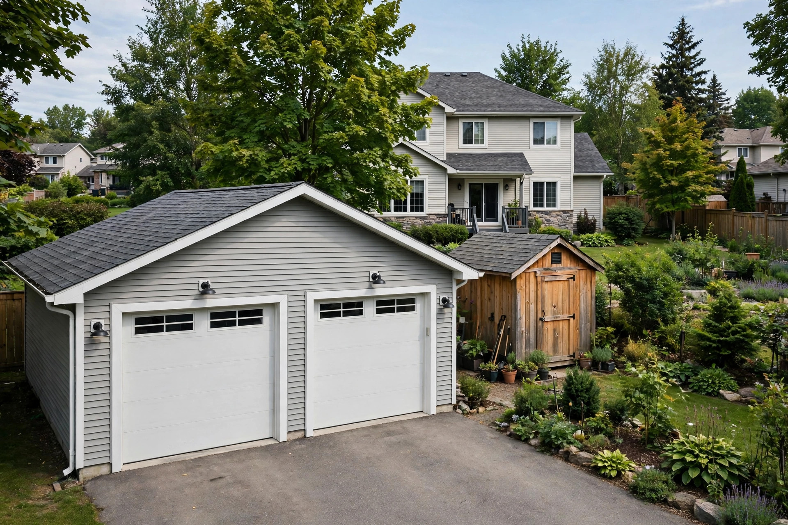

Detached garages and outbuildings in Canada: the Coverage B limit most owners never check

General information only. This guide explains, in general terms, how Canadian home policies cover detached garages, sheds, and other outbuildings. It is not insurance or financial advice. Limits and wording vary by insurer and province, and your own policy document is the final word for your property.
Start with the number: 10 percent, one pot, every structure
10 percent. That is the figure to hold in mind, because it is both the typical default and the trap. McDougall Insurance explains that most home policies automatically give 10 percent of the home's insured value for detached private structures: a dwelling insured for 600,000 dollars carries 60,000 dollars for its detached structures. Square One's glossary gives the same default from the other direction, a 300,000 dollar dwelling producing a 30,000 dollar detached structures limit.
Acera Insurance adds the clause that changes the math for real properties: the limit applies to all outbuildings together. It is one shared pot, not a limit per building. A garage, a shed, a gazebo, and a fence draw on the same 10 percent. A property with one modest shed sits comfortably inside it. A property with a finished garage and a workshop can pass it without any single building looking extravagant.
The section has a name worth learning, because it is the name on your declarations page. BrokerLink and Square One both note that insurers commonly label it Coverage B, Detached Private Structures. Coverage A protects the house itself. The two limits are calculated separately, and Coverage B being adequate has nothing to do with Coverage A being generous.
Three buckets that are not interchangeable
Most underinsurance in a yard comes from mixing up three buckets that a policy keeps apart:
| Bucket | What it pays for | The limit that governs it |
|---|---|---|
| The structure | Repairing or rebuilding the garage, shed, or gazebo itself after an insured peril | Coverage B, commonly 10 percent of the dwelling limit, shared by all structures |
| The contents inside it | Tools, bikes, equipment, and stored belongings kept in the structure | Contents coverage, not Coverage B, with special low limits on some high-value items wherever they are stored |
| The separate-policy structure | Large or serviced buildings: living quarters over a garage, plumbing and heating of its own, business use | Its own policy or a scheduled addition, set by valuation rather than by the 10 percent default |
BrokerLink is explicit that belongings inside a detached structure fall under contents coverage, not Coverage B. Begin Insurance, writing on Ontario garages, makes the companion point: policies often include low limits for certain high-value items regardless of where they are stored, which is why expensive tools or bikes in a garage can be underinsured even when the garage itself is not. Scheduling an item and raising Coverage B are different fixes for different buckets, and doing one does nothing for the other.
The third bucket surprises owners of ambitious outbuildings. McDougall notes that large garages with living quarters, and pavilions or boat houses with their own plumbing and heating, can require an additional policy, sometimes with a formal valuation, and possibly treatment as a secondary dwelling. Acera adds the hard edge: a building used for commercial purposes is not covered under a home policy at all, and needs commercial property coverage instead. Begin Insurance states the same business-use exclusion for standard policies.
The replacement cost catch on over-limit structures
Many owners assume the guaranteed replacement cost protection on their dwelling quietly extends to everything on the lot. McDougall addresses this directly: in most instances, if a garage or outbuilding exceeds the automatic value provided, it will not have guaranteed replacement cost. The protection follows the limit, not the property.
The fix is disclosure before a loss, not argument after one. McDougall's route is to tell the insurer the structure's real value so the limit can be raised, accepting that some carriers charge a premium for the increase, some do not offer added protection and require the policy to be rewritten, and some require a separate policy. BrokerLink gives the lighter version of the same fix: where the default is short, a broker can raise the limit through an endorsement. Either way, the conversation costs a phone call. The alternative is discovering the cap from an adjuster.
One more carry-over Acera flags: the exclusions on your home policy apply to your outbuildings too. If the home has no overland water coverage, an overland water loss to the garage is not covered either. Raising a limit never adds a peril.
A rebuild-cost audit in five steps
- List every detached structure. Garage, shed, gazebo, boathouse, fences where your insurer counts them. Acera's advice is to disclose all of them; start by counting all of them.
- Price each one to rebuild, not to buy. Begin Insurance puts a detached garage or workshop rebuild at 80,000 to 120,000 dollars where features such as heating, servicing, or living space are involved. A basic shed is a fraction of that. Use rebuild cost, because that is what a claim pays toward.
- Total the list and compare it with one number. Find Coverage B on your declarations page. Begin Insurance works the example: a 100,000 dollar garage against a 60,000 dollar limit leaves 40,000 dollars out of pocket after a total loss.
- Audit the contents separately. Walk the garage with a phone camera, total the tools and equipment, and check the special limits in your contents section for anything concentrated in one item.
- Flag the third-bucket structures. Anything with living quarters, its own plumbing and heating, or business use gets named to the insurer as its own question, not buried in the Coverage B total.
Success looks like this: a one-page list where every structure has a rebuild figure, the total sits next to your actual Coverage B limit, and any gap has a decision attached to it. Fifteen minutes, once, beats the same arithmetic done by an adjuster after a fire.
Decision framework: raise the limit, schedule it, or insure it separately
Match the fix to the bucket. A modest gap across ordinary structures is a limit problem: ask for the Coverage B increase or endorsement and price it against the gap it closes. A contents problem is a scheduling problem: name the high-value items and check their special limits. A structure with living quarters, services, or business use is a placement problem: it may belong on its own policy or as a separately valued addition, and only the insurer can say which. Square One offers a reminder that the default itself is a choice at some insurers, where detached structures coverage is optional and the customer picks the limit. Optional cuts both ways: it can be lowered to save premium, which is exactly how a yard ends up insured by accident rather than by decision.
The 10 percent default was designed for a house with a shed. Price what is actually standing in your yard, and make the limit a decision instead of a default.
General information only, not insurance advice. Detached structure limits, replacement cost treatment, and exclusions vary by insurer and province. Talk to a licensed insurance professional about your specific situation, and treat your own policy document as the final word.
— Penny Hughes, Money Writer — Saving Desk
Keep readingNext: What home insurance actually covers (and usually doesn't) →